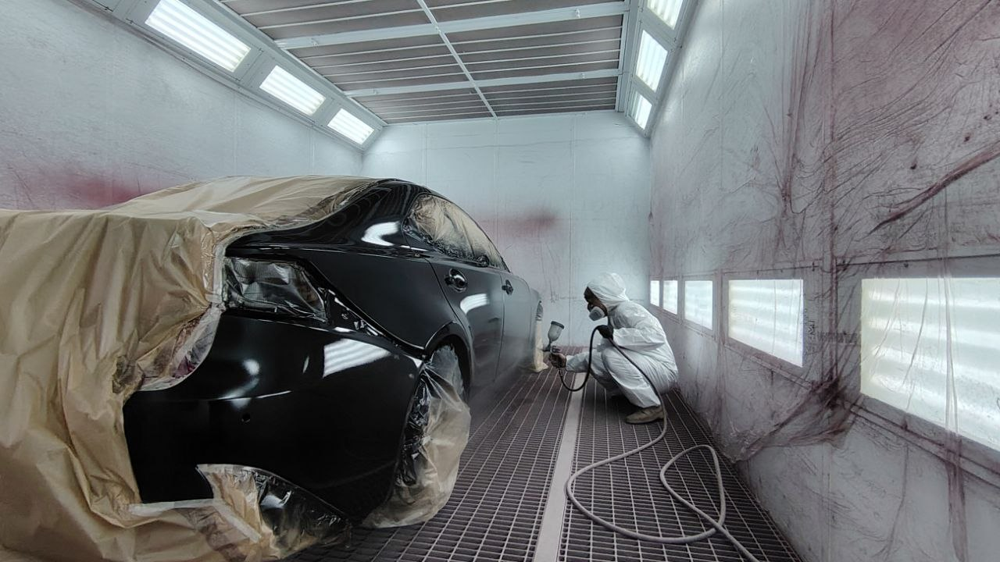
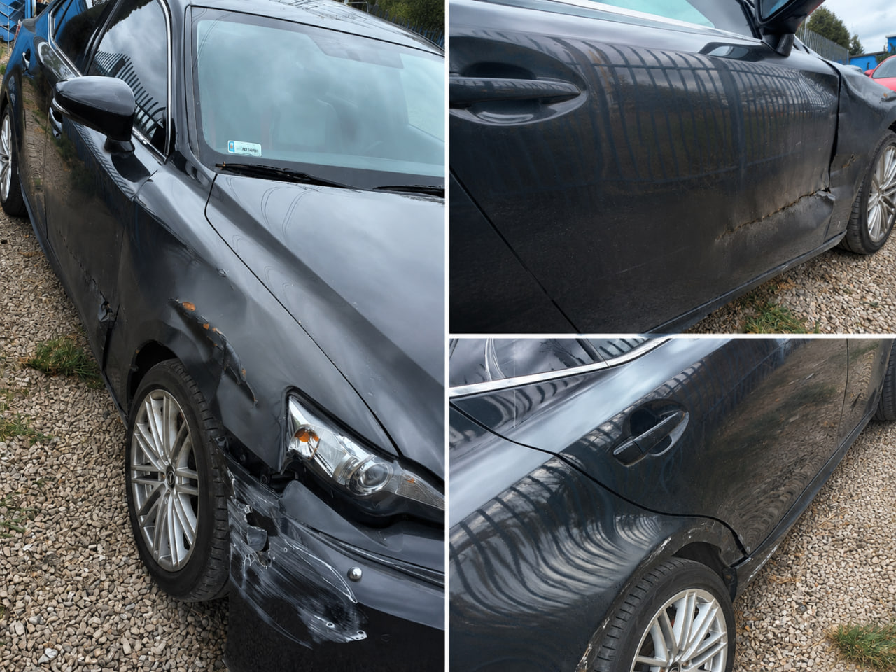
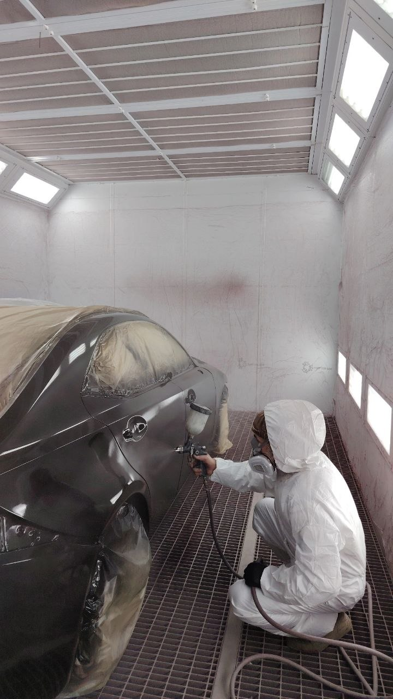
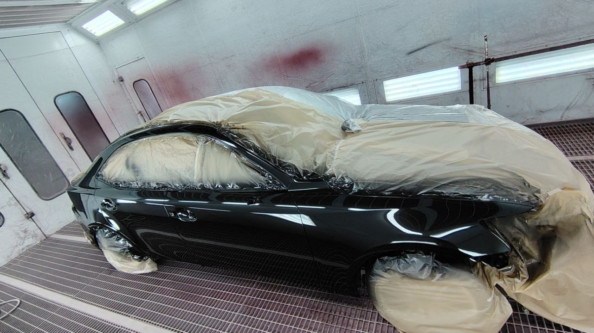

Lakierowanie
Lakierowanie pojedynczych elementów oraz większych powierzchni z zachowaniem starannego dopasowania koloru.

Blacharstwo i Lakiernictwo
Lakierowanie elementów, naprawy blacharskie, usuwanie rdzy, polerowanie lakieru oraz naprawy powypadkowe. Solidna praca, dokładność i ponad 20 lat doświadczenia.
Nasze usługi
Zajmujemy się naprawami samochodów osobowych z dbałością o każdy detal — od przygotowania powierzchni po końcowe wykończenie lakieru.
Lakierowanie pojedynczych elementów oraz większych powierzchni z zachowaniem starannego dopasowania koloru.
Naprawy uszkodzonych elementów karoserii po kolizjach, otarciach i wgnieceniach.
Oczyszczanie, zabezpieczanie i naprawa miejsc narażonych na korozję.
Odświeżanie lakieru, poprawa połysku oraz usuwanie drobnych zarysowań.
Realizacje
W naprawach blacharsko-lakierniczych liczy się precyzja, przygotowanie oraz cierpliwość. Zobacz przykładową realizację i sprawdź, jak wygląda proces od uszkodzenia do gotowego auta.
Zobacz realizacje



O nas
Agil Auto Serwis to lokalny warsztat blacharsko-lakierniczy w Mościskach, obsługujący kierowców z okolic Warszawy. Stawiamy na rzetelną ocenę uszkodzeń, indywidualną wycenę i solidne wykonanie.
Każde auto traktujemy odpowiedzialnie — niezależnie od tego, czy chodzi o drobne zarysowanie, usunięcie korozji, czy większą naprawę powypadkową.
Poznaj nas bliżejWstępna wycena
Nie podajemy stałych cen bez obejrzenia uszkodzeń. Skontaktuj się z nami telefonicznie lub przez WhatsApp, aby otrzymać indywidualną wstępną wycenę.